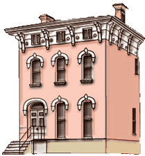

-

Udacity Project 5: Neighborhood Map Project
I choose to use the Madison Indiana Historic Landmark District for this project.
-
Udacity Project 3: Classic Arcade Game Clone
I call it Splat! Have a go.
-
Udacity Project 2: Online Resume
See my online resume project.
-
 Udacity Project 6: Feed Reader Testing
Udacity Project 6: Feed Reader Testing
This project uses Jasmine in a Test Driven Development scenario.
-
 Udacity Project 4: Website Optimization
Udacity Project 4: Website Optimization
In this project, we were given an existing website to optimize.